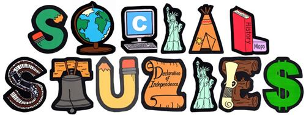

Home
English
Hindi
Science
SS
Maths
Sanskrit
Marathi
Tejas U. Desai 6A 37 2021-2022
E-Portfolio
Social Science

Multiple Assessment - 1: A Look into Pre-History
Click here to view MA-1 project
Multiple Assessment - 2:
Click here to view MA-2 project PPT
Multi Disciplinary Project
Click here to view MD project PPT